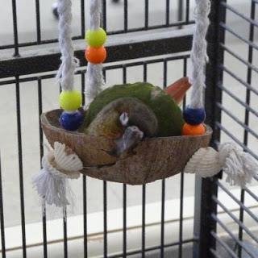

Components of a Perfect Cage
Size and Shape
A good size for your conure's cage would be no less than 45 centimetres square.
You want to ensure that your conure is comfortable - it should be able to fully
spread its wings and sit on a perch so that its tail is not touching the bars.
It is much more preferable if you are able to get a cage that is rectangular in
shape rather than circular. Rectangular cages make mounting perches easier, and
they allow for your conure to find comfort in a corner if it is feeling stressed.
Walls, Ceiling and Floor
The bars of your conure's cage should be 1/2 to 3/4 inches apart. A cage with inappropriate
bar spacing could injure your bird - you do not want its head or toes to get stuck
in between. Horizontal bars are preferred, as this makes it easier for your green
cheek conure to climb the cage walls and move around.
Some parrots tend to feel uncomfortable if the ceiling of their cage is solid.
It is better to get a cage with a barred ceiling to ensure your conure feels as happy
as possible. Use newspaper or a bird-specific pet litter product to keep the floor
of the cage clean.
Toys and Accessories
Green cheek conures can get bored easily, so its important that you have lots of toys on hand to keep them entertained. The best toys for your parrot are things that are colourful and shiny, that can also be safely chewed on.
- Bells
- Swings
- Short chains with
medium-sized links - Rope toys
- Wooden blocks
- Paper
Get:
- Sharp objects
- Old/very used toys
- Long chains with
very small- or
very large-
sized links - Things your conure can
get stuck in (unless under
careful supervision!)
Avoid:
green cheek conure
Rachael Mohl
CIS*1050
April 2020
If you have any questions, just contact me at rmohl@uoguelph.ca!